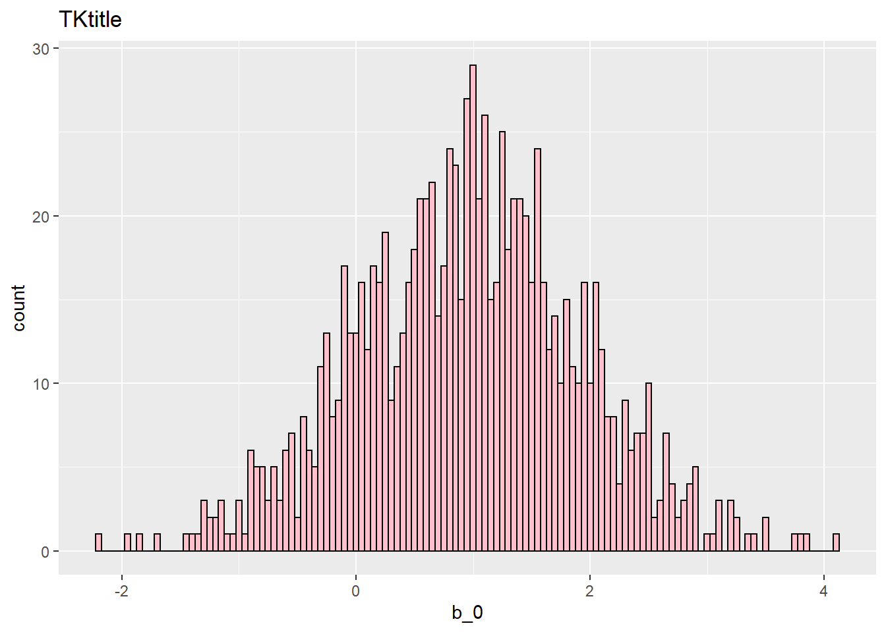
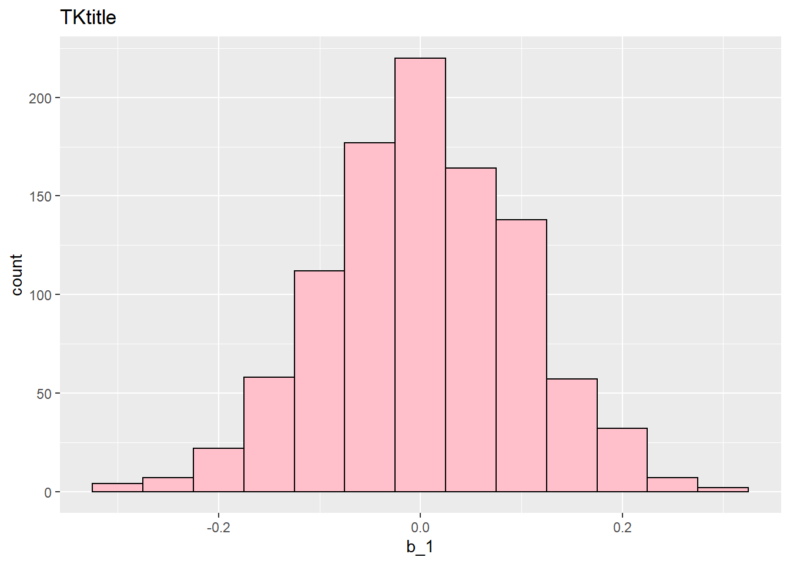

Chapter 8 Consistency
8.1 Goals (previous)
Simulate a data-generating process (DGP) from scratch, given the population parameters
Show how to sample from the DGP numerous times, with each sample generating a sample estimate
Show that these sets of sampling estimates follow a distribution
Note : Code chunks with STUDENTS are for intented to teach students, CHALLENGE are challenging but students with some programming skills can easily learn, PROF are for students with advanced programming skills and instructors.
8.2 Goals (current)
- Show a sampling distribution when true \(\beta_1 = 0\).
8.3 Overview
- We follow the univariate DGP from before. We then loop our process to generate many samples, each with its own estimate of \(\beta_1\). We then graph the distribution of the estimates and look at their properties.
- The only change here is to set \(\beta_1= 0\) in the DGP.
In this problem set, you generated sampling distributions of (β_1 ) ̂ when U ~ N(0,5), and were taking 1,000 samples of 1,000 observations each. Construct a “population” dataset with 1,000,000 observations with this same DGP (all other parameters of the setup stay the same). Take 1,000 samples (and get the empirical variance of (β_1 ) ̂) based on sampling 10,, 100, 1,000, and 10,000 observations each time (so, 1,000 samples of 10 observations, 1000 samples of 100 observations, etc.). Plot the 4 histograms (or density plots) that result from these simulations. Either place all 4 histograms on the same plot, or make the x-axis on all 4 the same range. Make another plot, which on the x-axis has the sample size you were using, and on the y-axis you have the empirical variance across the 1,000 draws. Advanced-extra credit on this PS. Iterate through equally-spaced bins of sample size (instead of 10, 100, 1000, etc. start at 500, then 1000, then 1500, up to some high number) so that you can get the shape of the curve in part (c) instead of just 4 (x,y) points to plot.
8.4 Generating data from a known linear univariate DGP
n <- 1000000
u<-rnorm(n, 0, sqrt(9))
x<-rnorm(n, 10,sqrt(1))
beta0<-1
beta1<-0
y<-beta0+beta1*x+u
df<-data.frame(y,x,u)
head(df)## y x u
## 1 0.2117031 10.49637 -0.7882969
## 2 1.9931879 10.45746 0.9931879
## 3 -2.8702541 11.68836 -3.8702541
## 4 -0.2614506 10.14413 -1.2614506
## 5 1.4951523 10.01319 0.4951523
## 6 7.5798110 10.03691 6.57981108.5 Sampling from the population
- Next, we will take 1,000 samples of 1,000 observation from the population data, with each sample yielding us a \(\hat{\beta_0}\) and \(\hat{\beta_1}\).
b_0<-c()
b_1<-c()
for(i in 1:1000){
sff<- df[sample(nrow(df), 1000, replace=FALSE), ]
estimates<-lm(y~x, sff)
b_0[i]<-coef(estimates)[1]
b_1[i]<-coef(estimates)[2]
}
coeff<-data.frame(b_0, b_1)
head(coeff)## b_0 b_1
## 1 0.5865453 0.040840194
## 2 1.4482701 -0.048574735
## 3 0.9756452 0.005668765
## 4 -0.0979289 0.110855352
## 5 2.5829476 -0.151528630
## 6 0.4448188 0.062706428ggplot(coeff, aes(x=b_0)) +
geom_histogram(color="black", fill="pink", binwidth = 0.05)+
ggtitle('TKtitle') 
ggplot(coeff, aes(x=b_1)) +
geom_histogram(color="black", fill="pink", binwidth = 0.05)+
ggtitle('TKtitle') 
8.6 Properties of the empirical simulations
## [1] 0.9607526## [1] 0.003667223## [1] 0.9214121## [1] 0.0091740748.6.1 What values of B1 hat define the cutoff for the 5% of observations in either tail?
## 5% 95%
## -0.1492310 0.16406448.6.2 Divide all values of B1 hat by the standard deviation of the distribution of b1 hats.
What value of this transformed B1 hat defines the cutoff for the 5% of observations with the largest absolute value you get in the (transformed) sampling distribution?
## 5% 95%
## -1.558038 1.7129058.6.3 Randomly sample coefficients from the distribution until you get one that is in the 5% tails.
- How many tries does it take to get a value “far away” from the true value?
tails<-quantile(coeff$b_1, c(.05, .95))
sample_beta1<-0 #start by setting this to zero for the while loop
i<-1 #loop counter for print
while (sample_beta1>=tails[1] & sample_beta1<=tails[2]) {
sample_beta1<-sample(coeff$b_1,1)
print(paste0('Sample number ',i,": ",sample_beta1))
i<-i+1
}## [1] "Sample number 1: 0.034078008449304"
## [1] "Sample number 2: -0.060571914180609"
## [1] "Sample number 3: -0.0112119751697641"
## [1] "Sample number 4: -0.0701335192419715"
## [1] "Sample number 5: -0.0342942520155939"
## [1] "Sample number 6: -0.0560707104786931"
## [1] "Sample number 7: 0.079284782714954"
## [1] "Sample number 8: 0.0401660398633941"
## [1] "Sample number 9: 0.053062886886849"
## [1] "Sample number 10: -0.311000129203764"